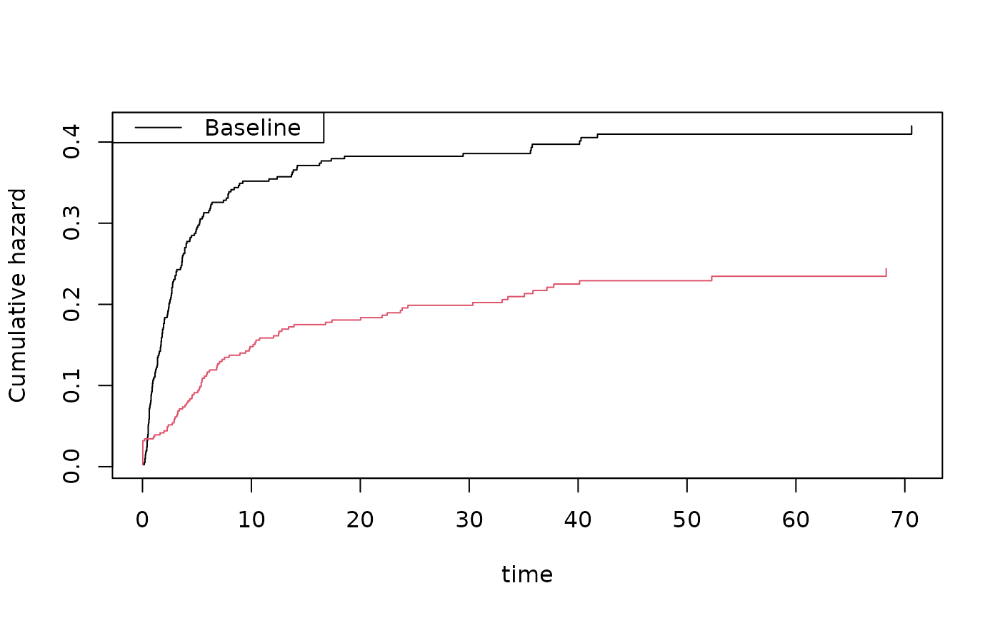

Simple version of comp.risk function of timereg for just one time-point thus fitting the model $$P(T \leq t, \epsilon=1 | X ) = expit( X^T beta) $$
binreg( formula, data, cause = 1, time = NULL, beta = NULL, offset = NULL, weights = NULL, cens.weights = NULL, cens.model = ~+1, se = TRUE, kaplan.meier = TRUE, cens.code = 0, no.opt = FALSE, method = "nr", ... )
| formula | formula with outcome (see |
|---|---|
| data | data frame |
| cause | cause of interest |
| time | time of interest |
| beta | starting values |
| offset | offsets for partial likelihood |
| weights | for score equations |
| cens.weights | censoring weights |
| cens.model | only stratified cox model without covariates |
| se | to compute se's based on IPCW |
| kaplan.meier | uses Kaplan-Meier for baseline than standard Cox |
| cens.code | gives censoring code |
| no.opt | to not optimize |
| method | for optimization |
| ... | Additional arguments to lower level funtions |
Based on binomial regresion IPCW response estimating equation: $$ X ( \Delta I(T \leq t, \epsilon=1 )/G_c(T_i-) - expit( X^T beta)) = 0 $$ for IPCW adjusted responses.
var in output is variance based on specific formula for variance with IPCW adjustment, $$ \sum (X_i ( \Delta I(T \leq t, \epsilon=1 )/\hat G_c(T_i-) - expit( X^T \hat \beta))^2 + \int h^2(s) / y.(s)^2 d N.^C(s)$$ where $$ h(s) = \sum_i X_i Y_i(t) I(s \leq T_i \leq t)$$ (this is the bread of the sandwhich estimator), robvar is variance based on $$ \sum w_i^2 $$ also with IPCW adjustment, and naive.var is variance under known censoring model.
Censoring model may depend on strata.
data(bmt) # logistic regresion with IPCW binomial regression out <- binreg(Event(time,cause)~tcell+platelet,bmt,time=50) summary(out)#> OR estimates#> Estimate Std.Err 2.5% 97.5% P-value #> [(Intercept)] 0.8368213 0.1064365 0.6282097 1.0454330 0.12524905 #> [tcell] 0.6526482 0.2271478 0.2074468 1.0978497 0.12621774 #> [platelet] 0.6427204 0.1557992 0.3373596 0.9480811 0.02183613#> pred se lower upper #> 1 0.3497382 0.04858124 0.2545190 0.4449574 #> 2 0.2598194 0.07038113 0.1218724 0.3977664outs <- binreg(Event(time,cause)~tcell+platelet,bmt,time=50,cens.model=~strata(tcell,platelet))#> Warning: NaNs producedsummary(outs)#> OR estimates#> Estimate Std.Err 2.5% 97.5% P-value #> [(Intercept)] 0.8346783 0.1063683 0.6262003 1.043156 0.12012753 #> [tcell] 0.6935985 0.2438233 0.2157136 1.171483 0.20887883 #> [platelet] 0.6481681 0.1558202 0.3427662 0.953570 0.02394969########################################## ### risk-ratio of different causes ####### ########################################## data(bmt) bmt$id <- 1:nrow(bmt) bmt$status <- bmt$cause bmt$strata <- 1 bmtdob <- bmt bmtdob$strata <-2 bmtdob <- dtransform(bmtdob,status=1,cause==2) bmtdob <- dtransform(bmtdob,status=2,cause==1) ### bmtdob <- rbind(bmt,bmtdob) dtable(bmtdob,cause+status~strata)#> Warning: Using formula(x) is deprecated when x is a character vector of length > 1. #> Consider formula(paste(x, collapse = " ")) instead.#> Warning: Using formula(x) is deprecated when x is a character vector of length > 1. #> Consider formula(paste(x, collapse = " ")) instead.#> strata: 1 #> #> status 0 1 2 #> cause #> 0 160 0 0 #> 1 0 161 0 #> 2 0 0 87 #> ------------------------------------------------------------ #> strata: 2 #> #> status 0 1 2 #> cause #> 0 160 0 0 #> 1 0 0 161 #> 2 0 87 0cif1 <- cif(Event(time,cause)~+1,bmt,cause=1) cif2 <- cif(Event(time,cause)~+1,bmt,cause=2) bplot(cif1)bplot(cif2,add=TRUE,col=2)cifs1 <- binreg(Event(time,cause)~tcell+platelet+age,bmt,cause=1,time=50) cifs2 <- binreg(Event(time,cause)~tcell+platelet+age,bmt,cause=2,time=50) summary(cifs1,or=FALSE)#> log-OR estimates#> Estimate Std.Err 2.5% 97.5% P-value #> (Intercept) -0.1954 0.1311 -0.4524 0.06160 1.362e-01 #> tcell -0.6371 0.3590 -1.3407 0.06661 7.599e-02 #> platelet -0.3523 0.2472 -0.8368 0.13231 1.542e-01 #> age 0.4198 0.1070 0.2101 0.62944 8.711e-05#> log-OR estimates#> Estimate Std.Err 2.5% 97.5% P-value #> (Intercept) -1.31834 0.1583 -1.62855 -1.0081 8.114e-17 #> tcell 0.74232 0.3593 0.03808 1.4466 3.884e-02 #> platelet -0.03093 0.2795 -0.57869 0.5168 9.119e-01 #> age -0.09327 0.1424 -0.37236 0.1858 5.125e-01cifdob <- binreg(Event(time,status)~-1+factor(strata)+ tcell*factor(strata)+platelet*factor(strata)+age*factor(strata) +cluster(id),bmtdob,cause=1,time=50,cens.model=~strata(strata)) summary(cifdob,or=FALSE)#> log-OR estimates#> Estimate Std.Err 2.5% 97.5% P-value #> factor(strata)1 -0.1954 0.1311 -0.4524 0.06160 1.362e-01 #> factor(strata)2 -1.3183 0.1583 -1.6285 -1.00813 8.114e-17 #> tcell -0.6371 0.3590 -1.3407 0.06661 7.599e-02 #> platelet -0.3523 0.2472 -0.8368 0.13231 1.542e-01 #> age 0.4198 0.1070 0.2101 0.62944 8.711e-05 #> factor(strata)2:tcell 1.3794 0.6031 0.1973 2.56147 2.219e-02 #> factor(strata)2:platelet 0.3213 0.4321 -0.5255 1.16820 4.571e-01 #> factor(strata)2:age -0.5130 0.2071 -0.9189 -0.10722 1.322e-02riskratio <- function(p) { expit <- function(z) 1/(1+exp(-z)) ## expit Z <- rbind(c(1,0,1,1,0,0,0,0), c(0,1,1,1,0,1,1,0)) lp <- c(Z %*% p) p <- expit(lp) return(p[1]/p[2]) } estimate(coef=cifdob$coef,vcov=cifdob$var,f=riskratio)#> Estimate Std.Err 2.5% 97.5% P-value #> p1 0.6639 0.2762 0.1227 1.205 0.01621